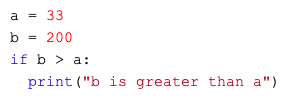

Computergestütztes Experimentieren
Teil 2: Programmieren mit PsychoPy
Zoom, 12. März 2021
Hat die Installation geklappt? üì±
Mit Code 9114 8062 über: https://www.menti.com
Oder QR-Code:

Behalten wir die Gruppen bei? üì±
Mit Code 9114 8062 über: https://www.menti.com
Oder QR-Code:
Auf was musst du beim experimentellen Design achten? üì±
Notiere deine Stichworte auf Menti. üìù
Mit Code 1243 1296 via https://www.menti.com
Oder QR-Code:

Brainstorming
Was f√ºr Projektideen kommen dir spontan in den Sinn? üì±
Mit Code 5200 6596 via https://www.menti.com
Oder QR-Code:
Alles klar soweit? Gibt es Unklarheiten? üì±
Stelle deine Fragen auf Menti.
Mit Code 5200 6596 via https://www.menti.com
Oder QR-Code:

Syntax: Einschlag
- Indentation matters!
- Darstellung von Code Blöcken (z.B Loops, if statements, etc.)
- Mind. 1 Einzug und homogen innerhalb des Blocks


Syntax: Iterations und conditionals
Loops

if statements

Quiz üì±
Mit Code 5200 6596 via https://www.menti.com
Oder QR-Code: